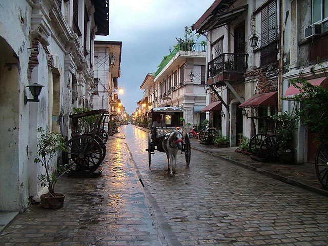

Rice Terraces of the Philippine Cordilleras

Baroque Churches of the Philippines

Historic Town of Vigan
Mount Apo


Explore the rich history and cultural heritage of the Philippines.From the majestic rice terraces of Ifugao to the intricately designed Baroque churches scattered across the archipelago, these landmarks offer a glimpse into the country's fascinating past and enduring traditions. Embark on a journey through time as you uncover the stories behind these remarkable sites and immerse yourself in the beauty of their architecture, landscapes, and cultural significance.

Location: Ifugao Province, Luzon Island
History: Constructed over 2,000 years ago by the indigenous Ifugao people
Building Materials: Stone and mud walls
Culture: Integral part of the Ifugao culture, reflecting sustainable land use and conservation practices
Beliefs: Considered sacred by the Ifugao people, reflecting their spiritual connection with nature

Location: Various provinces in Luzon
History: Built during the Spanish colonial period in the 16th to 18th centuries
Architecture: Intricately designed with Baroque style influenced by Spanish and Filipino elements
Cultural Significance: Symbolize the spread of Christianity and the blending of Spanish and Filipino cultures
Examples: Paoay Church in Ilocos Norte, San Agustin Church in Manila, Santa Maria Church in Ilocos Sur
Location: Vigan City, Ilocos Sur
History: Established in the 16th century as a trading post between Asia and the Americas
Architecture: Well-preserved Spanish colonial architecture, cobblestone streets, and ancestral houses
Cultural Significance: Reflects the fusion of Asian, European, and Filipino cultures
Attractions: Calle Crisologo, Vigan Cathedral, Syquia Mansion

Location: Bohol Province, Visayas
Formation: Estimated to be at least 1,200 hills formed from coral limestone
Appearance: Turn chocolate-brown during the dry season, resembling Hershey's Kisses
Legend: According to local folklore, the hills were formed from the tears of a giant named Arogo
Location: Loboc, Bohol Province, Visayas
History: Built in 1602, making it one of the oldest churches in Bohol
Architecture: Baroque style with ornate facade and bell tower
Cultural Significance: Houses the second oldest pipe organ in the Philippines, dating back to 1824
Location: Sulu Sea, Palawan Province (part of the Visayas region)
Features: Marine protected area with two coral atolls and extensive reef systems
Biodiversity: Home to diverse marine life, including over 600 species of fish, sharks, dolphins, and turtles
Conservation: Designated as a UNESCO World Heritage Site for its outstanding universal value and biodiversity conservation efforts
Location: Zamboanga City, Mindanao
History: Fort Pilar, also known as Real Fuerza de Nuestra Señora del Pilar de Zaragoza, was built by Spanish colonizers in the 17th century to protect the region from Moro pirate attacks.
Architecture: The fort features a triangular bastion design typical of Spanish colonial military architecture, with thick stone walls and cannons overlooking the sea.
Significance: Fort Pilar serves as a symbol of Zamboanga City's rich history and cultural heritage, reflecting the enduring influence of Spanish colonization in Mindanao.
Location: Bongao, Tawi-Tawi, Mindanao
History: The Tawi-Tawi National Shrine is believed to be the final resting place of Sheikh Karim ul-Makhdum, a Muslim missionary who introduced Islam to the Philippines in the 14th century.
Significance: Regarded as one of the oldest Islamic structures in the Philippines, the shrine serves as a symbol of the rich Islamic heritage and cultural influence in the region.
Architecture: The shrine features traditional Islamic architecture with intricate designs and motifs, reflecting the enduring legacy of Islam in Mindanao.
Location: Davao Oriental, Mindanao
Features: Diverse ecosystem with unique flora and fauna, including the iconic pygmy forest and endangered Philippine eagle
UNESCO Status: Designated as a UNESCO World Heritage Site in 2014 for its outstanding universal value and rich biodiversity
Conservation: Protected area managed by the Philippine government and various conservation organizations